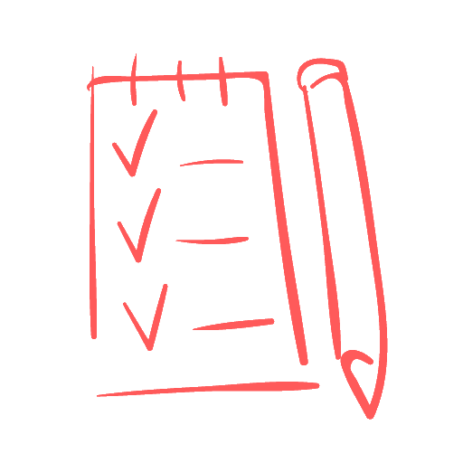

(8-029)-851-52-51
(8-029)-851-52-51 (8-029)-657-59-71
(8-029)-657-59-71

Репетитор по математике и высшей математике в Минске Игнатьев Игорь Викторович
Проспект Дзержинского, дом 131, станция метро «Малиновка», Брилевичи
Занятия проводит кандидат физико-математических наук с опытом работы более 20 лет. Мной подготовлены победители и призеры математических олимпиад различного уровня (свыше 20 учеников), абитуриенты, набравшие на ЦТ по математике 100 баллов (более 10 учеников).
Подробная информация о репетиторе>>


Основные направления деятельности:
Подготовка к ЦТ по математике. Более 400 абитуриентов с моей помощью поступили в различные вузы Беларуси, дальнего и ближнего зарубежья. Создана электронная база, включающая в себя все варианты централизованных и репетиционных тестирований всех лет и авторские наработки с возможностью любой выборки, будь то тема, уровень сложности, год, всевозможные другие критерии и их пересечения. Также мной осуществляется подготовка к ЕГЭ по математике.Подробная информация о подготовке к ЦТ>>
Репетитор по высшей математике. Более 350 студентов подготовлено мной к экзаменам по высшей математике и другим математическим дисциплинам. Все студенты, занимавшиеся на постоянной основе и выполнявшие домашнее задание, сдали экзамен с первого раза. Далеко не все студенты могут самостоятельно освоить разделы высшей математики. Зачастую студенты первого курса не понимают грань, которая разделяет школу и вуз. Скорее всего, материал более не будет «разжевываться», большое количество времени будет отведено на самостоятельную работу. Никто не будет «тянуть за уши», ведь высшее образование не является обязательным  Пересдача и отчисление – это новые неприятные, но, тем не менее, реальные вещи. Не стоит до этого доводить.Подробная информация о репетиторе по высшей математике>>
Пересдача и отчисление – это новые неприятные, но, тем не менее, реальные вещи. Не стоит до этого доводить.Подробная информация о репетиторе по высшей математике>>
Пересдача и отчисление – это новые неприятные, но, тем не менее, реальные вещи. Не стоит до этого доводить.Подробная информация о репетиторе по высшей математике>>
Репетитор по математике для школьников. Провожу занятия со школьниками с 4 по 11 классы с любым уровнем подготовки. Считаю основным создание у ученика фундаментальной математической базы, соответствующей его классу, уровню, математическим способностям и дальнейшего ее развития. Учу находить взаимосвязь между различными главами и разделами математики. Постоянно держу на контроле новые темы, зачастую работаю на опережение. При этом считаю чрезвычайно важным добиться у ученика знания предмета в полном объеме, а не в рамках последних тем. Всегда выхожу за программу учебника и даю понимание предмета на более глубоком уровне. При этом обязательно учитываются способности учащегося. Как следствие из вышесказанного, происходит повышение успеваемости.
Отдельно выделю следующие направления:
-подготовка по математике для поступления в лицей, колледж, гимназию после 9-го класса;
-подготовка к ОГЭ по математике;
-подготовка к математическим олимпиадам;
-решение нестандартных и логических задач;
Подробная информация о репетиторе по математике для школьников>>
Репетитор по математике для взрослых. В последние годы обозначилась тенденция, когда взрослые, зачастую уже состоявшиеся в своей профессии люди, осознают, что недостаточная математическая база является стопором в дальнейшем развитии и совершенствовании в выбранной специальности. Нередко требуется репетитор по алгебре и геометрии для восстановления основ школьной программы, необходима подготовка по основным главам высшей математики, теории вероятностей, дальнейший выход на специальные дисциплины. Подробная информация о репетиторе по математике для взрослых>>
Онлайн репетитор по математике. Репетитор по Skype (репетитор по скайпу) для школьников, абитуриентов, студентов и взрослых. Отмечу, что данный вид репетиторства математики на постоянной основе больше подходит для учеников, имеющих определенные навыки и математические способности. Также оказывается экстренная помощь: репетитор по математике онлайн. Подробная информация о репетиторе онлайн по математике>>
Преимущества:

Профессионализм
Как правило, подавля-ющее большинство репетиторов считают себя профессионалами, поэто-му выделю некоторые особенности:
Как правило, подавля-ющее большинство репетиторов считают себя профессионалами, поэто-му выделю некоторые особенности:

Сочетание различных подходов, технологий и экспромта
Не буду рассказывать о некой уникальной методике, которая всем подходит, ее просто не существует. В умелом выборе процесса обуче-ния в зависимости от ученика и постоянной импровизации, на мой взгляд, лежит ключ к хорошему результату.
Не буду рассказывать о некой уникальной методике, которая всем подходит, ее просто не существует. В умелом выборе процесса обуче-ния в зависимости от ученика и постоянной импровизации, на мой взгляд, лежит ключ к хорошему результату.
Кабинет для занятий
Просторная светлая комната специально проектировалась для занятий. В ней не будет поднадоевшей парты, мела и доски, но создана непринужденная рабочая атмосфера, и есть все необходимое для занятий.
Просторная светлая комната специально проектировалась для занятий. В ней не будет поднадоевшей парты, мела и доски, но создана непринужденная рабочая атмосфера, и есть все необходимое для занятий.

Многофункциональность
Я не беру для себя только лакомые куски. Например, не занимаюсь исключительно натаскиванием на ЦТ. Вы можете получить помощь по математике в освоении школьной программы для любого класса, в олимпиадном движении, при подготовке к ЦТ, дальнейшей учебе в вузе.
Я не беру для себя только лакомые куски. Например, не занимаюсь исключительно натаскиванием на ЦТ. Вы можете получить помощь по математике в освоении школьной программы для любого класса, в олимпиадном движении, при подготовке к ЦТ, дальнейшей учебе в вузе.

Опыт
Я занимаюсь репетиторством по математике с 1996 года, не считая студенческой практики. И каждый год приходит понимание того, что определенные моменты следует изменить, аккуратно модернизировать процесс и программу обучения, добавить некоторые новые детали, при этом ничего не сломав. Постоянное развитие, накопленные в течение длительного периода навыки и грамотное их применение для меня являются основными составляющими опыта в профессии.
Я занимаюсь репетиторством по математике с 1996 года, не считая студенческой практики. И каждый год приходит понимание того, что определенные моменты следует изменить, аккуратно модернизировать процесс и программу обучения, добавить некоторые новые детали, при этом ничего не сломав. Постоянное развитие, накопленные в течение длительного периода навыки и грамотное их применение для меня являются основными составляющими опыта в профессии.

Математика, русский и белорусский языки в одной семье
Моя жена – репетитор по русскому языку. Вы можете посещать занятия по русскому или белорусскому языкам здесь же.
Моя жена – репетитор по русскому языку. Вы можете посещать занятия по русскому или белорусскому языкам здесь же.

Организация занятий
Подготовка по математике возможна индивидуально, в парах и мини-группах от трех до пяти человек. При этом очень ответственно подхожу к набору учащихся. Ученики разного уровня не занимаются вместе, количество учеников в мини-группе строго ограничено, учитывается и психологическая совместимость. Я - за качество преподавания, а Вы получаете максимум знаний за отведенное время.
Подготовка по математике возможна индивидуально, в парах и мини-группах от трех до пяти человек. При этом очень ответственно подхожу к набору учащихся. Ученики разного уровня не занимаются вместе, количество учеников в мини-группе строго ограничено, учитывается и психологическая совместимость. Я - за качество преподавания, а Вы получаете максимум знаний за отведенное время.

Прямое общение с преподавателем
Работа ведется на законных основаниях с уплатой единого налога без посредников, организаторов и прочих лиц, чья основная цель – извлечение прибыли. Здесь Вы не найдете «опытных профессионалов» с опытом работы от 0 лет и уникальными авторскими методиками, не затеряетесь в большой группе учеников с самыми разными способностями и не прочтете вымышленных отзывов.
Работа ведется на законных основаниях с уплатой единого налога без посредников, организаторов и прочих лиц, чья основная цель – извлечение прибыли. Здесь Вы не найдете «опытных профессионалов» с опытом работы от 0 лет и уникальными авторскими методиками,
не затеряетесь в большой группе учеников с самыми разными способностями и не прочтете вымышленных отзывов.

Местоположение
Занятия проходят в шаговой доступности от станции метро «Малиновка».
Занятия проходят в шаговой доступности от станции метро «Малиновка».
 (8-029)-657-59-71
(8-029)-657-59-71